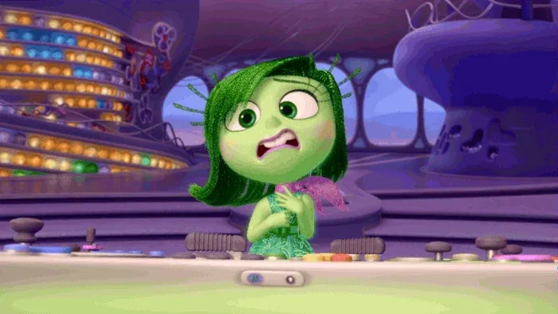

Disgust, as a character, is usually protective of Riley and wary of the other emotions. In reality, disgust is an emotion generally meant to protect a person from illness, disease, and contamination. This emotion may also socially protect a person by helping them avoid situations that could be psychologically unhealthy

Awareness of your emotions can help you move forward and improve your mental health. Studies show that suppressing any emotion can worsen your mental health, so being open to fully experiencing your feelings can be beneficial. Below are a few evidence-based strategies for honoring your emotions and improving your well-being.
You might assign judgment to your emotions due to how they make you feel, the behavioral urges you experience when you feel them, and how others perceive them. Dialectical behavior therapy (DBT) usually teaches the perspective that emotions are neutral and that each has a purpose. Emotions can be seen as different from the behavioral urges that might arise when you experience them.
emotional>In these situations, you might try practicing the following steps of radical acceptance:
you face barriers to receiving in-person care, you might try talking to a therapist online through a platform like bettercup

Now that Rileys a teenager, Disgusts radar for the painfully uncool is sharper than ever. Opinionated, brutally honest and committed to keeping Riley away from all things icky, Disgust is quick to turn up her nose at the first whiff of funky food, cringy comments, and refuses to partake in any activity that could lead to certain social death.